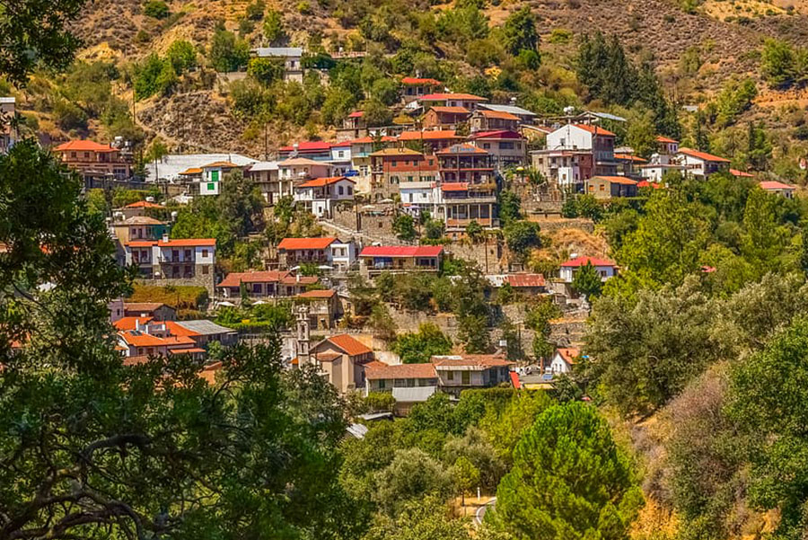

Effect of short term stay in climate cooler/mountainous area of Cyprus in the summer
– January 20, 2020
The TEMP trial highlighted the potentially beneficial effect of a short-term stay (mean stay: 7 days) in the mountainous Troodos communities (mean altitude: 880 meters) during summer on leptin levels of healthy adults, aged 20-60 years, whose permanent residence is in the urban centres of Nicosia or Limassol.
The results of the randomized pilot cross-over TEMP trial were published in the Environmental Research journal
The aim of the study was to investigate whether a temporary stay (≥5 days) of healthy adults in Troodos area in the summer could improve the levels of metabolic hormones (leptin and adiponectin) and stress hormone (cortisol).
The mountain communities in which participants stayed temporarily were the following: Agros, Alona, Kakopetria, Kalopanagiotis, Louvaras, Moniatis, Oikos, Platania and Platanistasa.
The experimental results of the TEMP trial showed:
I. Significant improvement in the leptin levels when healthy non-obese adults moved from their permanent home in Nicosia or Limassol to Troodos area for 5–15 days. Adiponectin and cortisol levels improved but were not statistically significant.
II. The improvement in the leptin levels in the mountainous environment was statistically associated with a significant decrease in skin temperature compared to the corresponding temperature measured for the same individuals in the city using personal sensors.
We would like to thank the study participants as well as the community leaders, whose communities the participants stayed at, Ms. I. Panagiotou, the former Commissioner for the Environment, Dr. M. Tryfonos, Kyperounta Hospital, and Mr M. Constantinou, Chairman of the Board of the Tris Elies community.
EL
Η μελέτη TEMP ανέδειξε τη δυνητικά ευεργετική επίδραση της έστω και παροδικής διαμονής (μέση διαμονή 7 μέρες) στο περιβάλλον της περιοχής του Τροόδους πάνω στα επίπεδα της μεταβολικής ορμόνης λεπτίνης για ενήλικες που μετέβησαν από την πόλη σε κάποια από τις ορεινές κοινότητες του Τροόδους (μέσο υψόμετρο 880 μέτρα) κατά την περίοδο του καλοκαιριού
Οι μεταβολικές ορμόνες λεπτίνη και αδιπονεκτίνη παράγονται από τον λιπώδη ιστό και είναι σημαντικοί δείκτες υγείας γιατί συνδέονται με την παχυσαρκία και το μεταβολικό σύνδρομο.
Σκοπός της μελέτης ήταν να διερευνηθεί κατά πόσον μια παροδική διαμονή (≥5 ημέρες) το καλοκαίρι σε κάποια από τις ορεινές κοινότητες του Τροόδους θα μπορούσε να βελτιώσει τα επίπεδα μεταβολικών ορμονών (λεπτίνη και αδιπονεκτίνη) και της κύριας ορμόνης του ψυχοκοινωνικού στρες (κορτιζόλη).
Οι ορεινές κοινότητες στις οποίες διέμειναν παροδικά οι συμμετέχοντες ήταν οι ακόλουθες: Αγρός, Άλωνα, Κακοπετριά, Καλοπαναγιώτης, Λουβαράς, Μονιάτης, Οίκος, Πλατάνια και Πλατανιστάσα.
Τα πειραματικά αποτελέσματα της μελέτης TEMP έδειξαν:
I. σημαντική βελτίωση των επιπέδων της μεταβολικής ορμόνης λεπτίνης όταν οι ενήλικες συμμετέχοντες μετέβησαν για 5-15 ημέρες στην περιοχή του Τροόδους από την μόνιμη κατοικία τους στη Λευκωσία ή Λεμεσό. Τα επίπεδα των ορμονών αδιπονεκτίνη και κορτιζόλη βελτιώθηκαν, αλλά δεν ήταν στατιστικώς σημαντικά.
II. η βελτίωση των επιπέδων της μεταβολικής ορμόνης λεπτίνης στο περιβάλλον του Τροόδους συνδέθηκε στατιστικά με σημαντική μείωση της θερμοκρασίας δέρματος σε σχέση με τις αντίστοιχες θερμοκρασίες που μετρήθηκαν για τα ίδια άτομα στην πόλη με τη βοήθεια προσωπικών αισθητήρων (sensors).
Θα θέλαμε να ευχαριστήσουμε τους συμμετέχοντες της μελέτης, όπως επίσης, τους κοινοτάρχες, στων οποίων τις κοινότητες έλαβε χώρα η μελέτη, την τέως Επίτροπο Περιβάλλοντος κα. Ι. Παναγιώτου, τον Δρ. Μ. Τρύφωνος, Νοσοκομείο Κυπερούντας, και τον Μ. Κωνσταντίνου, Πρόεδρο του διοικητικού συμβουλίου της κοινότητας Τρεις Ελιές.